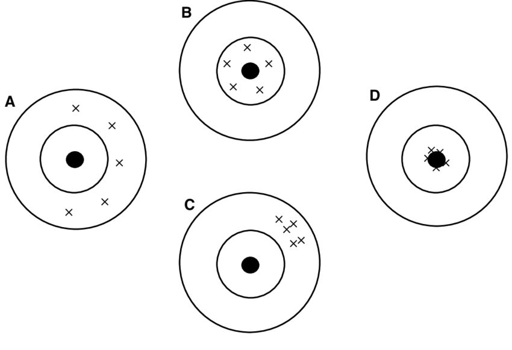

Data and Measurement
Session 04

Reliable vs. valid measures


Valid ≈ no systematic error (low bias) · Reliable ≈ little random error (low variance)
More data: less noise, same bias

Beyond reliability and validity…


Haven’t chosen your R track yet?